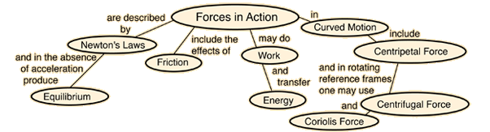

ForceOne of the foundation concepts of physics, a force may be thought of as any influence which tends to change the motion of an object. Our present understanding is that there are four fundamental forces in the universe, the gravity force, the nuclear weak force, the electromagnetic force, and the nuclear strong force in ascending order of strength. In mechanics, forces are seen as the causes of linear motion, whereas the causes of rotational motion are called torques. The action of forces in causing motion is described by Newton's Laws under ordinary conditions, although there are notable exceptions. Forces are inherently vector quantities, requiring vector addition to combine them. The SI unit for force is the Newton, which is defined by Newton = kg m/s2 as may be seen from Newton's second law.  |
Index | ||
|
Go Back |
Causes of MotionThe influences which cause changes in the motion of objects are forces and torques. The effects of forces on objects are described by Newton's Laws. A force may be defined as any influence which tends to change the motion of an object. The relationship between force, mass, and acceleration is given by Newton's Second Law: Newton's First Law states that an object will continue at rest or in motion in a straight line at constant velocity unless acted upon by an external force. Newton's Third Law states that all forces in nature occur in pairs of forces which are equal in magnitude and opposite in direction. |
Index Newton's laws concepts | ||
|
Go Back |